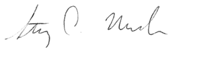

N. Yongsatianchot and S. Marsella, "Integrating model-based prediction and facial expressions in the perception of emotion", in International conference on artificial general intelligence, 2016, pp. 234-243.
--> PDFThe paper under consideration was submitted and accepted to Artificial General Intelligence (AGI) in 2016 with full presentation. AGI is the main, annual conference for research on modeling general intelligence at the human level.
It is an understatement to say that Nut did the majority of the work for the paper. He provided the major contribution to the design, solely handled development and by far did the majority of the writing. The work was a first step in Nut’s research on emotion detection and emotion modelling. He is deservedly listed as first author. He presented the work and handled all communication during the conference (The presentation can also be viewed here .) I feel it fulfills his paper requirement and have full confidence that his work on the paper shows his potential for future research.
